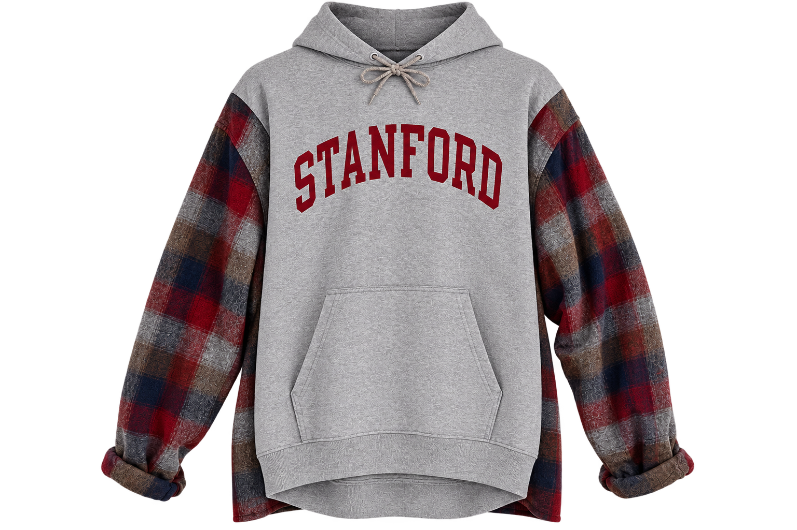
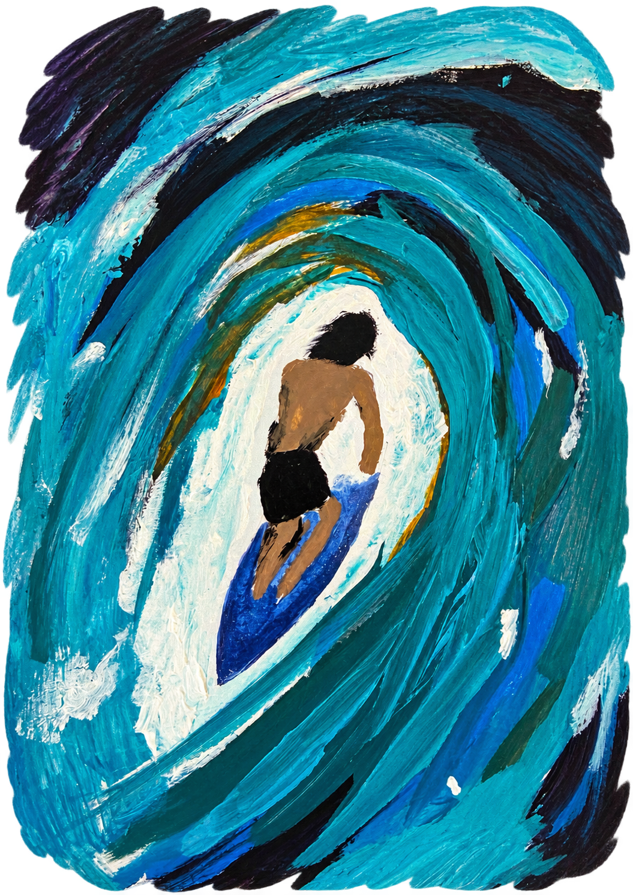
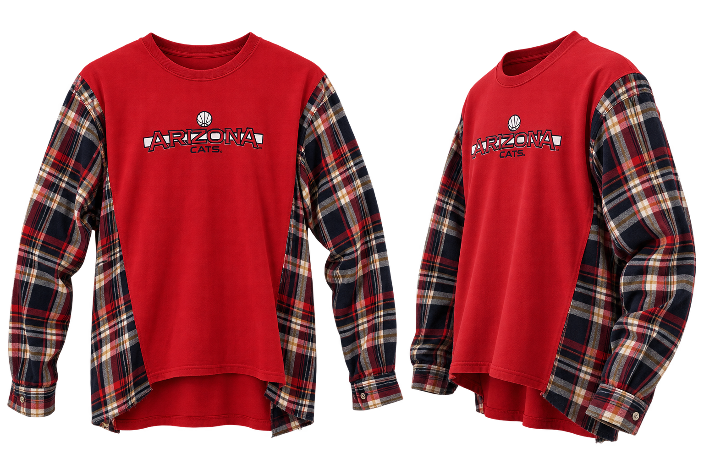
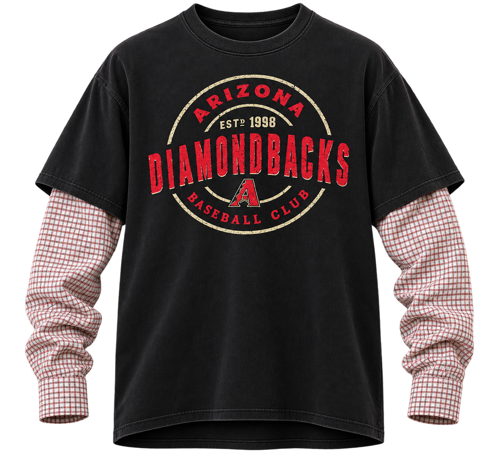
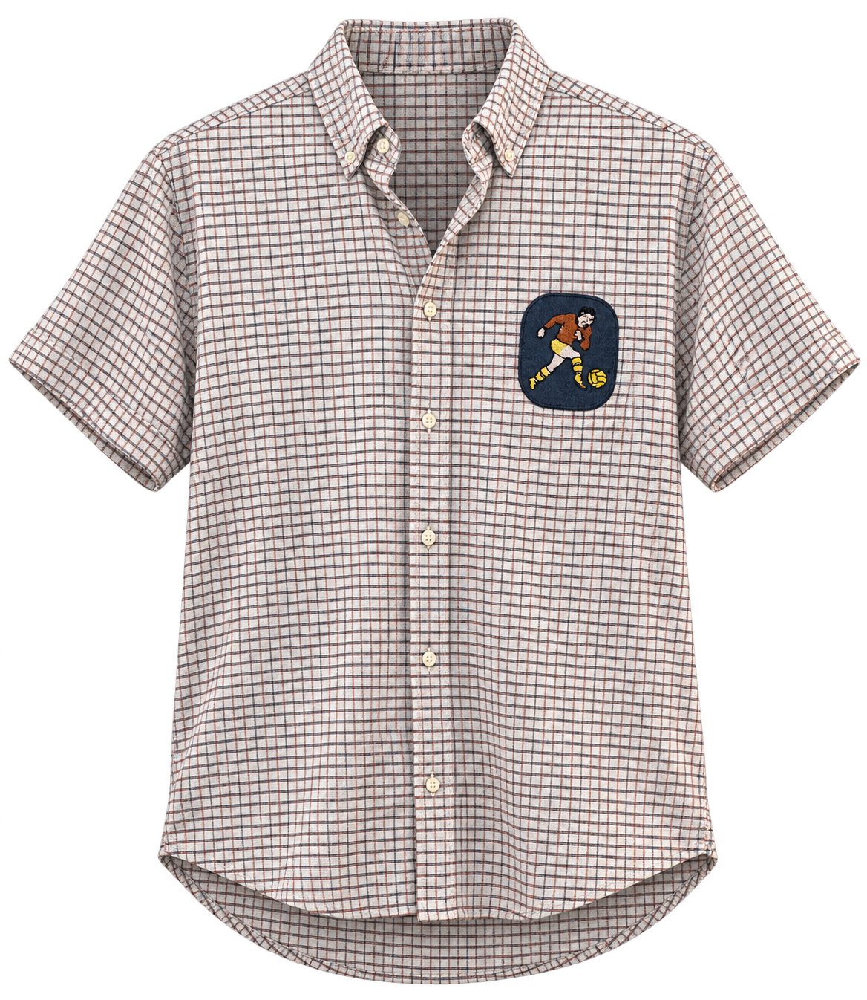

[CLICK TO EXPAND]Stanford Custom Silhouette
Bespoke tailored assembly balancing movement volume and structural weight.
Surf & Motion Study
Textural exploration capturing the kinetic energy and fluid weight of ocean surf using heavy impasto reliefs.

[CLICK TO EXPAND]
[CLICK TO EXPAND]Arizona Cats Hybrid Reconstruction
Mixed-medium deconstructed pullover integrating tailored woven flannel shirting sleeves and stepped hem architecture.
Sunset Blues Chromatic Study
Atmospheric color study capturing the transitional shift from golden hour warmth into deep evening indigo.

[CLICK TO EXPAND]Diamondbacks Layered Reconstruction
Hybrid dual-sleeve long-sleeve combining a boxy faded graphic tee with tailored micro-check shirting cuffs.
Trumpet Man Figurative Study
Figurative exploration capturing the kinetic intensity, silhouette tension, and atmospheric warmth of live jazz performance.

[CLICK TO EXPAND]Tailored Grid Check & Patch Appliqué
Short-sleeve re-tailoring of a classic tattersall check with structured button-down collar points and vintage athletic felt appliqué.